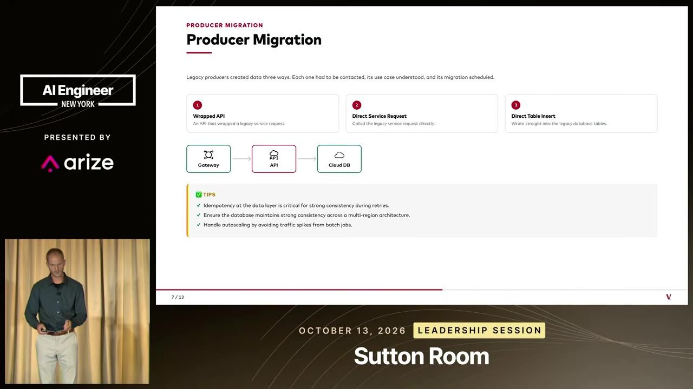
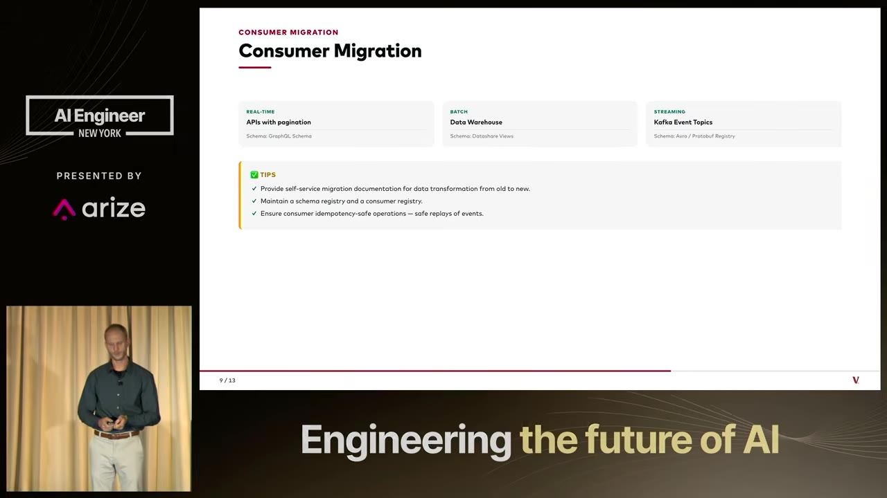
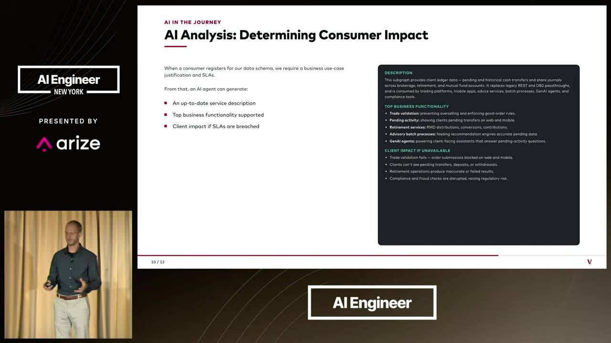

essencial do dia: A Vanguard expôs código legado à IA via MCP e cortou a pesquisa de 7 dias para 15 minutos numa migração crítica.
Código legado consultável por IA via MCP
AI Cut Our Research Time From 7 Days to 15 Minutes
Quem expõe o código legado a uma IA via MCP encurta a pesquisa de dias para minutos e destrava a migração inteira.
Depois deste talk você consegue expor código e documentação legados a uma IA por MCP e medir o tempo de resposta antes e depois
Em 3 frases
A Vanguard modernizou o ledger (livro-razão) de caixa das contas de corretagem, que recebe até 30 milhões de chamadas por dia, migrando dados, produtores e consumidores em paralelo.
O ponto de virada foi expor o código legado a ferramentas de IA por um servidor MCP, o que cortou a pesquisa de um engenheiro de mainframe de 7 dias para 15 minutos, segundo o palestrante.
Ele fecha com cinco lições, entre elas tratar a documentação de migração como produto, reimaginar em vez de copiar o legado e nunca abrir mão de observabilidade.
Antes de ler
- MCP protocolo para conectar ferramentas a agentes analogia no glossário
- Ledger livro-razão de créditos e débitos
- Change data capture (CDC) captura de mudanças de dados
- Idempotência repetir a operação sem mudar o resultado final analogia no glossário
- Schema registry catálogo central de formatos de dados
- Observability observabilidade (logs, métricas e traces) analogia no glossário
Código legado consultável por IA via MCP
Antes, descobrir como o sistema antigo funcionava exigia pedir a um engenheiro de mainframe ou a um arquiteto, e a resposta levava 7 dias. Com o código legado exposto a ferramentas de IA por um servidor MCP (protocolo que conecta a IA a fontes de dados), a mesma pergunta virou um prompt de 15 minutos.
 (ampliar imagem)
(ampliar imagem)
Três migrações em paralelo
O time dividiu o trabalho em dados, produtores (quem grava no ledger) e consumidores (quem lê). Por ser prioridade da empresa, as três frentes andaram juntas. Na migração de dados, usaram CDC (captura de mudanças) e auditorias diárias que comparavam contagem de linhas e cada coluna entre o banco antigo e o novo.
01:34 A estrutura das três migrações simultâneas.
Documentação de migração vira produto
Eram 35 produtores para migrar. A documentação começou manual, foi para a wiki da empresa e depois foi exposta pelo mesmo servidor MCP. Os produtores tiravam dúvidas direto no prompt, e o volume de conversas de suporte com o time caiu bastante, segundo o palestrante.


(ampliar imagem)Mais 2 ideias deste talk
Consumidores por tempo real, lote e streaming
Cada consumidor acessa o ledger por um destes caminhos, todos com schema registry (catálogo central de formatos de dado). Tempo real usa GraphQL, onde cada um assina só os atributos de que precisa. Lote usa views no data warehouse. Streaming usa tópicos Kafka com entrega ao menos uma vez e operações idempotentes, para que repetir uma tarefa não duplique ledgers.


(ampliar imagem)Justificativa de negócio como metadado
No cadastro de 50 consumidores, o time pediu, além do código de aplicação, uma descrição do caso de uso e o impacto de quebrar o SLA. A IA agrupa essas descrições e responde quais funções de negócio dependem do ledger. Em incidente, isso mostra se há horas (lote) ou minutos (API em tempo real) para agir.


(ampliar imagem)O talk é um relato interno de uma empresa que apresenta o próprio projeto como sucesso. O ganho de 7 dias para 15 minutos vem de um exemplo citado, sem amostra, método de medição ou comparação de qualidade das respostas da IA. O palestrante não fala de erros do servidor MCP nem de quem revisa as respostas. O número de 90% de engenheiros usando IA também não traz fonte ou definição de uso. A divulgação da carreira da empresa e o contexto de palco de liderança favorecem o tom otimista.
Teste você mesmo
Responda de cabeça antes de abrir. Lembrar com esforço é o que fixa.
- lembrar O que mudou na pesquisa sobre o sistema antigo com o servidor MCP?
Ver resposta
Antes era preciso pedir a um engenheiro de mainframe ou a um arquiteto, e a resposta levava 7 dias. Com o código legado exposto à IA por um servidor MCP, a mesma pergunta virou um prompt de 15 minutos.
- aplicar Que documentação do seu time você publicaria para a IA ler e como mediria o efeito?
Ver resposta
Publique a documentação de migração ou integração onde a IA possa lê-la, como uma wiki exposta via MCP, e conte quantas dúvidas deixam de chegar por chat. Meça o tempo de resposta antes e depois.
- criticar Por que o ganho de 7 dias para 15 minutos exige cautela?
Ver resposta
É um relato interno de uma empresa que apresenta o próprio projeto como sucesso. O número vem de um exemplo, sem amostra, método ou comparação de qualidade das respostas. O talk não fala de erros do servidor MCP nem de quem revisa.
Perguntar ao código com acesso via MCP
Você precisa de: Claude Code ou Claude Desktop e um repositório com código que você não conhece bem
- Escolha um repositório que você não conhece e anote três perguntas sobre como ele funciona.
- Responda as perguntas lendo o código por conta própria e anote o tempo gasto.
- Dê acesso ao repositório à IA, por Claude Code ou MCP de arquivos, e faça as mesmas perguntas.
- Compare tempo e qualidade e confira as respostas da IA no código.
Deu certo se: Você tem os tempos dos dois métodos e sabe quais respostas da IA estavam corretas.
O que fazer com isso
- Liste as perguntas que hoje dependem de um especialista do sistema antigo e teste expor o código ou a documentação a uma ferramenta de IA, medindo o tempo antes e depois.
- Publique a documentação de migração ou integração onde a IA possa lê-la, por exemplo wiki exposta via MCP, e conte quantas dúvidas deixam de chegar por chat.
- No cadastro de quem usa seus dados ou APIs, peça a justificativa de negócio e o impacto de uma falha, para priorizar incidentes.
- Antes de migrar um sistema, pergunte se vale reimaginar o desenho em vez de copiar o legado tal como está.
Conversa com outros talks
- Cobrança de IA por uso, como um caixa eletrônico · 7 out · em comum: Idempotência, Ledger
- Subagentes como sistema distribuído: o modelo SAFE · 10 nov · em comum: Idempotência, MCP
- Como a Automattic ensina fluência em IA · 8 out · em comum: MCP, Observability